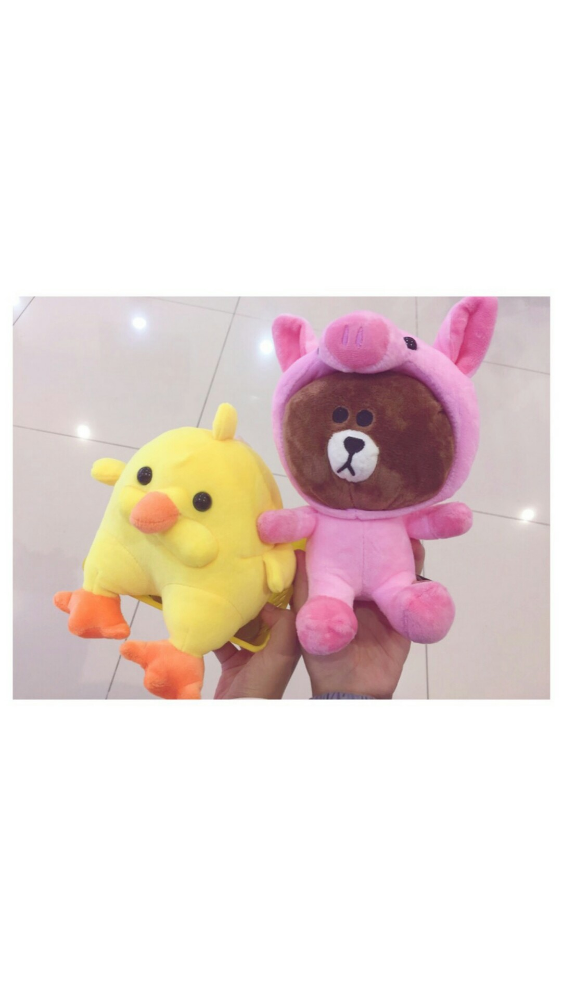

关于我们
我们的故事从初中开始嘛。先是注意到了班上一个安静认真的女孩，然后各种努力学习，花心思，于是赢得了女神的青睐。
有一段时间挺喜欢看斯蒂芬.金的小说，记得好像是在肖申克的救赎那本书后面有几个他的短篇集，当时里面有一句话我挺喜欢的
It's not the matter how the story is, but the people who told this story.既然遇见了，那么感谢相遇，讲好我们的故事。
讲故事的人，往往比故事本身更加精彩。

写给松松
我说不出来为什么爱你，但我知道，你就是我不爱别人的理由
——《虞美人盛开的山坡》
坐在床上，对着屏幕发呆，想了很久，不知道该从哪里写起，但我确确实实是在想你。
预初，因为校舍维修的关系，我们座位离得很远。直到初一，我才逐渐注意到你。
你给我的第一印象就是，文静低调学习好。那时的我只知道嘻嘻哈哈，于是，你在我心里，就显得那样遥不可及
还记得第一次和你说话，是给你发短信，问英语作业来着。略显奇怪的开始，并不影响之后慢慢的熟悉。也好在我热爱学习bushi。
再之后，我渐渐和你熟络起来。平日里为你准备些零食点心，又或是帮忙拿饭之类的小事。
可能从那时起，你也注意到了这样一个男生。
就这样过了两年，到了初三。老唐叫我们写下自己理想的高中。不经意间看到了你的备忘录上写的七宝，
从那天起，我便下定决心，要努力和你考上同一所学校。
“约会=学习"这是我们以前约会的常态。刚在一起的时候，因为学业的缘故，大多都会约在图书馆。 或是你带着闺蜜，或是我带着好伙伴；当然最开心的，还是只有我俩的时候。 那段时光，你就像榜样一般，给了我努力前进的动力。
"为了成为更好的自己"虽然最后没能如愿去到同一所高中，但我们的努力没有白费。只是地图上12.3km的距离把我俩分隔得太远，都是第一次恋爱的我们 显得有些力不从心。尤其是我吧，常常能在放学路上看见一对对情侣，多少是羡慕的，却也不知道该怎么对你表达我的思念。 好在，通过几次“朴实无华”的沟通，我们达成了共识，也一起维护了那份小小的感情。
以前，我总是在心里抱怨，你聊天时好冷漠，只会发“……”和笑脸。但在我坦白了想法后，松你也做出了改变 同样讲出了自己的想法。我记得我给你说过“我会努力，变得更好，不负我们的那份喜欢。” 应该，你也是这样想的吧。回想过去的八年
当然，以后的路还很长，那下一个小目标应该就是解封后速速约会吧！
说到这里，就想起来有这个愿望清单：
似乎想的有点远了，毕竟解封还有段时日。但是生活总是要有些期待的嘛。可能是高中语文老师给我的影响吧，我觉得我多少有些理想主义，喜欢想一些很理想化的东西，比如上面 写的看星星，我总觉得躺在一片星空下是一件很美的事情，可以啥都不干就看星星，吹吹风，就觉得很棒了。
吧啦吧啦，这个小网页从开始策划到正式开写，从月初写到了月底，也不是很多，但也不少。就先写这么多吧，希望今后的无数个八年都能有你在我身边了。
谢谢你肯包容我的缺点和不足，也谢谢你愿意和我一同努力
哦，还有一句：“我真的喜欢你~”
Story
of
Mr.Fang & Ms.Ling
第一次告白
那天晚上，月黑风高，小方同学悄咪咪打开手机，心里扑通扑通的跳，忐忑地给小林姑娘发去了一段不长的表白短信，然后合上手机，默默等待
你喜欢我吗？小方鼓起了老大的勇气，问出了这样的问题，还好没有被拒绝。
嗯，我从现在开始也是有女朋友的人啦。 2014.3.17
第一次牵手
傍晚，方先森送林小姐回家，快到地铁站的时候，鼓足了勇气
我这个手有点闲，要不给你拉一下？
迟疑了一秒，手放在了一起
第一次牵手，要说感觉，就是一个字——软，毕竟没牵过别人的，盒盒盒

一切从这里开始
方先森在六班的时候一眼相中了林小姐，于是开始了长达一年多的追求(唯唯诺诺)。不过好在林小姐也很给面子，痛快的答应了。
我们的故事，也就开始了~